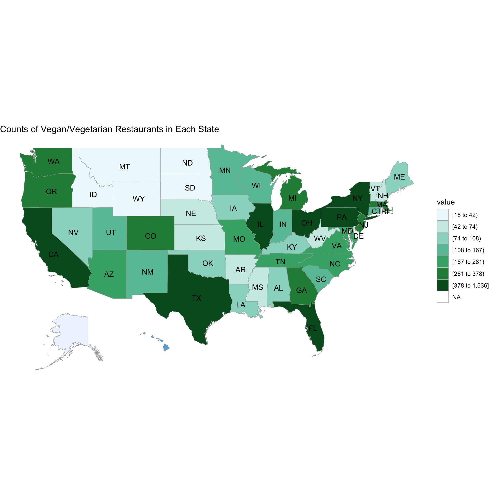
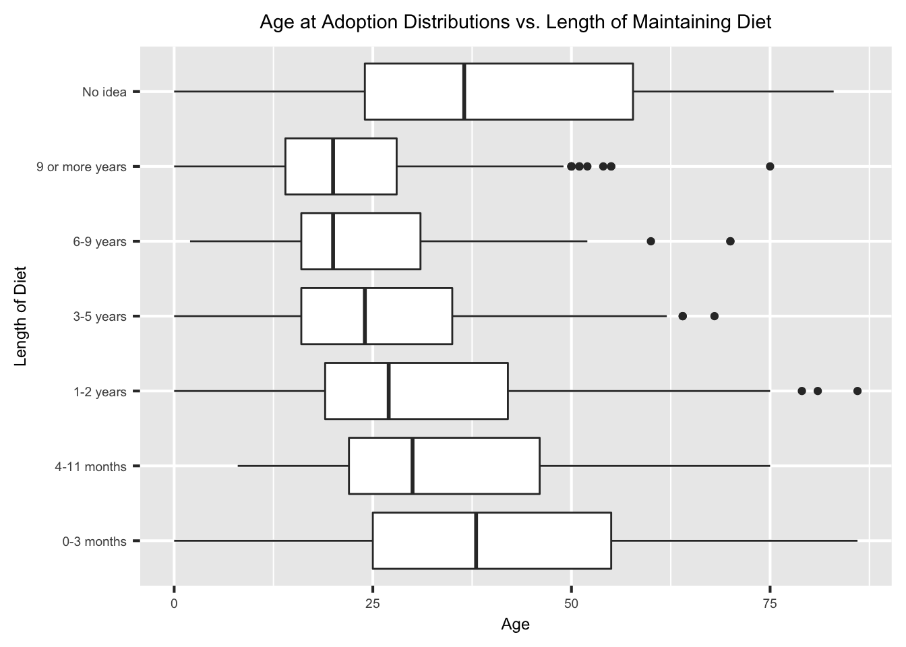
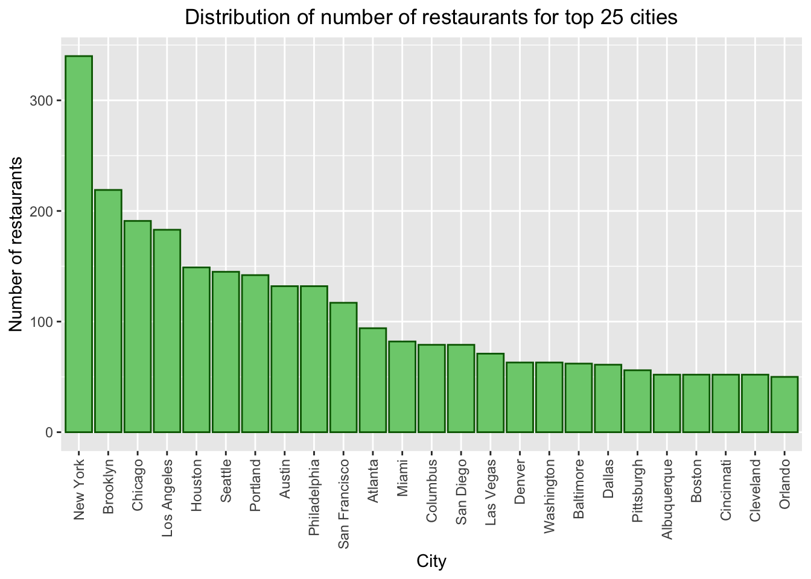
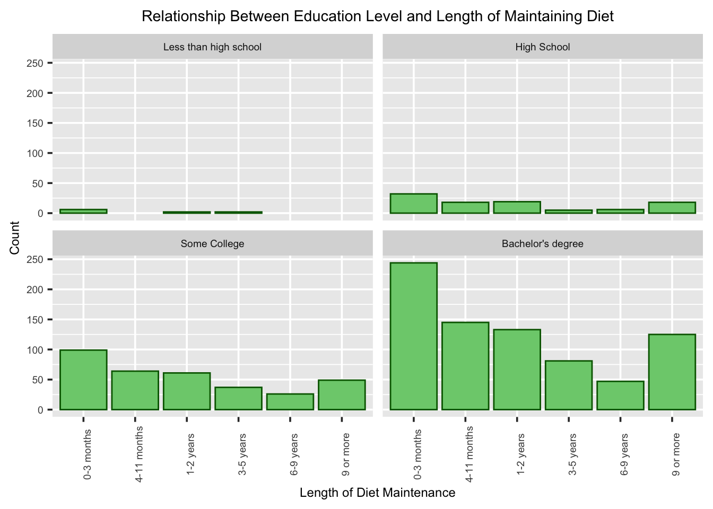

Chapter 5 Results
5.1 How Many Individuals Reported Agree, Disagree, or Neutral for Each of the Vegan/Vegetarian Inconvenience Reasons?

Within this dataset, we notice that there is a higher count of individuals that disagreed with the specified inconvenience reasons for a plant-based diet, except for the “no restaruarnts for grab n go”. Out of all of the inconvenience reasons, “diffifult during time of transitino” and “time consuming” had the highest counts of agreement from participants of the survey, while having to prepare both vegetarian and non-vegetarian foods had the least counts of agreements amongst participants.
5.2 What is Vegan/Vegetarian Restaurant Count Density Across the US?
The states with the highest number of plant-based restaurants include states in the north east such as NY, PA, and MA with OH - including TX and CA in the west and FL in the South east region of the country. States with the fewest counts of plant-based restaurants include states located in teh Pacific Northwest such as ID, MT, WY, and the Dakotas. Overall, North East region of the United States has the most number of vegetarian restaurants.
5.3 How Many Vegan/Vegetarian Restaurants Opened Over Time? Are There ANy Noticeable Trends?
There are two noticeable peaks in vegetarian restaurant opening in October 2016 and in April of 2017. However, based on this dataset the largest uptick in vegetarian restaurant openings happened from April 2017 to ~ July 2017. It would be interesting to investigatge the factors taht led to this large uptick in vegetarian restaurants opening and the locations in which they occured throughout the United States. from July 2016 to ~March 2017 restaurant opening reached a low plateau.
5.4 Is There A Relationship Between Time to Transition to Veganism & The Length of Time Mainting the Diet?

Interestingly enough out of the participants that did not know how long they were vegan, They reported also taking 9+ years before transitioning.
5.5 How Does Difficulty in Transition Opinions Differ Across Age Groups?

Out of the individuals that selected 5 - most difficult during transition, those that fall between ages 20-40 make up the majority. They are also the same age group that reports higher counts of least difficulty transitioning. It could be due to the fact that most participants within this study belong within this age group followed by ages 0-20. The overall sample of data had fewer participants between ages 80-100, but within this age group, most reported the difficulty in transtion as neutral. The responses for this age group also seems to follow a close to normal distribution.
5.6 Age Distribution vs. How Long Before Fully Transitioned

Out of those that remained on the plant-based diet for 6-9 and more than 9 years, the median ages were almost the same a little below 23 years at adoption. Those that did not know had the largest age distribution, including for the participants that indicated remaining plant-based for 0-3 months. Those that maintained a plant-based diet of 9 or more years have a smaller age distribution ranging from 18 to just over 25 years of age with an outlier of age 75.
5.7 What Are the Distributions for Age of Adoption Across Transition Time?

For the individuals that transitioned in 1-3 weeks, 1-6 months, and for more than a year, the median age is the same just above 25 years of age.
5.8 What Are the Top 25 Cities With the Most Vegan/Vegetarian Restaurants?
Based on the graph, New York and Brooklyn had the highest counts of number of vegetarian restaurants of 25 top cities - with over 300 and 200 restaurants respectively. Orlando had the lowest number of vegetarian restaurants with approximately 50, and with Boston, Cincinnati and Cleveland having slightly more than 50 restaurants.
5.9 Is There a Relationship Between Length of Maintaining Vegan/Vegetarian Diet and Access to Health Foods & Vegan/Vegetarian Restaurant Options?

Of those who maintained their dietary habits for 0-3 months, they also contribute to the highest counts of reporting difficulty accessing health foods and difficulty finding vegan/vegetarian options at restaurants. Both inconvenience issues seem to decline as the amount of time staying on the vegan/vegetarian diet increases. The chart may suggest that those that are able to maintain a vegan/vegeatrian diet for a longer period of time may be able to do so as access to health foods and options are not much of an inconvenience they are experiencing.
5.10 Does Education Level Influence Length of Vegan/Vegetarian Diet?
It does seem that with additional education, there are higher counts of observations as length of vegan/vegetarian diet increases. Overall, most of the participants within this sample obtained a Bachelors degree with fewest having completed less than high school. Out of the individuals that maintained their diet from 6-9 and more than 9 years, ~150 obtained a bachelors degree, with a little over 75 completed some college, with much less than ~40 for high school and less than high school.